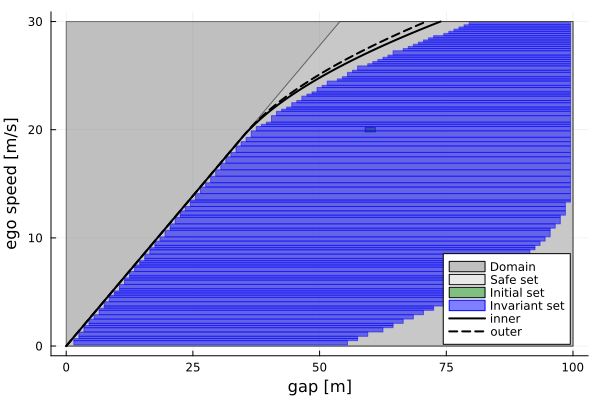
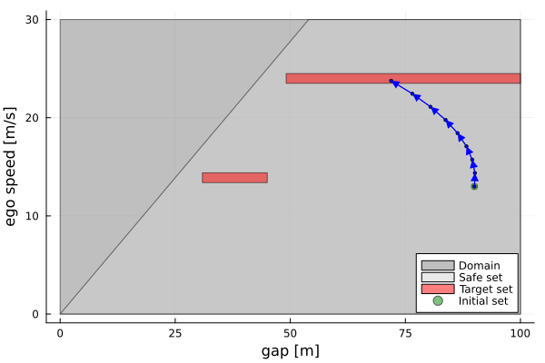
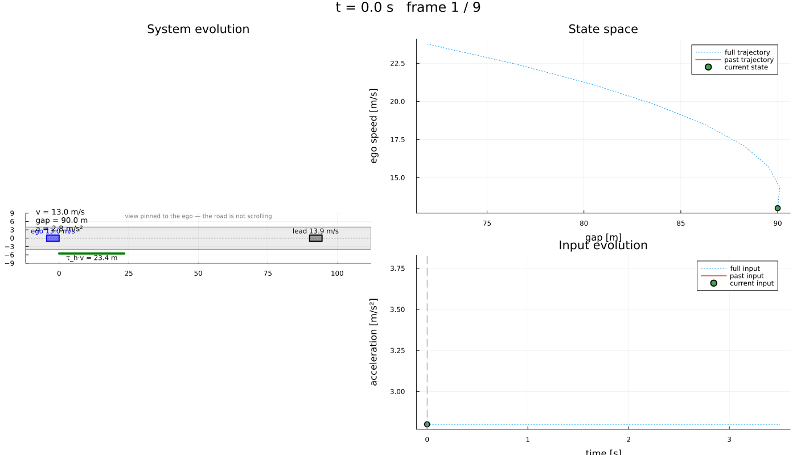

Adaptive cruise control: catching up without ever tailgating
| System | 2-D continuous, nonlinear |
| Specification | safety, then reach-and-stay |
| Solver | uniform grid abstraction |
A car follows another one travelling at a constant speed. It should reach a cruising set-point, and it must never come closer than a time headway of $\tau_h$ seconds. The model and every constant below are those of the control-barrier-function benchmark of (Ames et al., 2017); the same plant is the reference case study for correct-by-construction synthesis in (Nilsson et al., 2016).
The state is the gap to the lead vehicle and the ego speed, $x = (z, v)$ — a relative distance, not distance travelled — and the input is an acceleration:
\[\dot z = v_0 - v, \qquad \dot v = a - \frac{f_0 + f_1 v + f_2 v^2}{m}.\]
What makes this a good benchmark is that you can check the answer. The barrier $h = z - \tau_h v$ obeys $\dot h = (v_0 - v) - \tau_h \dot v$, which depends on $(v, a)$ alone — the gap drops out — so the largest set from which the headway can be held forever is available in closed form, and the abstraction can be judged against it instead of against itself.
using StaticArrays, JuMP, Plots
import LazySetsThe dynamics are written as ∂ expressions, so the front-end needs a symbolic backend to differentiate them.
using Symbolics, MathOptSymbolicAD
using Dionysos
const DI = Dionysos
const UT = DI.Utils
const ST = DI.System
const MP = DI.Mapping
const AB = DI.Optim.Abstraction;The model
Vehicle mass, the three resistance coefficients, the lead's speed, the cruising set-point, the headway, and the wheel-friction limit on acceleration.
m, f0, f1, f2 = 1650.0, 0.1, 5.0, 0.25
v_lead, v_desired, τ_h = 13.89, 24.0, 1.8
a_max = 0.3 * 9.81;The operating envelope, and the safe set inside it. z ≥ τ_h v is a half-space, so the safe set is a polytope rather than a box — the front-end accepts any bounded LazySet.
z_low, z_upp = 0.0, 100.0
v_low, v_upp = 0.0, 30.0
safe = LazySets.HPolytope([
LazySets.HalfSpace(SVector(1.0, 0.0), z_upp),
LazySets.HalfSpace(SVector(-1.0, 0.0), -z_low),
LazySets.HalfSpace(SVector(0.0, 1.0), v_upp),
LazySets.HalfSpace(SVector(0.0, -1.0), -v_low),
LazySets.HalfSpace(SVector(-1.0, τ_h), 0.0), # z ≥ τ_h v
]);Never tailgate
The first question is the safety one on its own: from which states can the headway be held forever? Always is the right marker rather than carving the region out of the state space — leaving the safe set is the thing to prevent, so those states must stay representable for the synthesis to reason about them (see src/wrapper/README.md §5.5).
model = Model(Dionysos.Optimizer)
@variable(model, z_low <= z <= z_upp)
@variable(model, v_low <= v <= v_upp)
@variable(model, -a_max <= a <= a_max)
@constraint(model, ∂(z) == v_lead - v)
@constraint(model, ∂(v) == a - (f0 + f1 * v + f2 * v^2) / m)\[ {\textsf{∂}\left({v}\right)} - {\left(-0.00015151515151515152 v^2 - 0.0030303030303030303 v + a - 6.060606060606061 \times 10^{-5}\right)} = 0 \]
60 m behind at 20 m/s: comfortably clear of the 36 m the headway asks for at that speed.
initial = LazySets.Hyperrectangle(; low = SVector(59.0, 19.8), high = SVector(61.0, 20.2))
@constraint(model, [z, v] in Start(initial))
@constraint(model, [z, v] in Always(safe));The growth bound is written by hand. ∂v̇/∂v is a contraction that only strengthens with speed, so its entry is taken at the slowest speed in the envelope, where the bound is weakest. The off-diagonal |∂ż/∂v| = 1 is the only coupling: after a step, the gap uncertainty is the gap uncertainty plus the time step times the speed uncertainty.
jacobian_bound = u -> SMatrix{2, 2}(0.0, 0.0, 1.0, -(f1 + 2 * f2 * v_low) / m);time_step * input step = 0.2 = speed step, so every input translates the speed axis onto itself by a whole number of cells.
set_attribute(model, "state_grid", MP.GridFree(SVector(0.0, 0.0), SVector(1.0, 0.2)))
set_attribute(model, "input_grid", MP.GridFree(SVector(0.0), SVector(0.4)))
set_attribute(model, "jacobian_bound", jacobian_bound)
set_attribute(model, "time_step", 0.5)
set_attribute(model, "approx_mode", AB.UniformGridAbstraction.GROWTH)
set_attribute(model, "print_level", 0)
optimize!(model);termination_status(model)OPTIMAL::TerminationStatusCode = 1invariant_set = get_attribute(model, "invariant_set")
abstract_system = get_attribute(model, "abstract_system")
XMapping = DI.Symbolic.get_state_mapping(abstract_system);The certificate, against ground truth
Braking at a_brake gives $\dot h = v^\star - v$ with $v^\star = v_0 + \tau_h a_{brake}$, so the barrier can only fall while $v > v^\star$, and riding that transient down to $v^\star$ costs $(v - v^\star)^2 / (2 a_{brake})$ of gap:
\[z \;\ge\; \tau_h v + \frac{\max(v - v^\star, 0)^2}{2\,a_{brake}}.\]
Using the friction limit alone ignores the resistance force, which assists braking, so that curve asks for more gap than is really needed — an inner bound. Adding the resistance back gives an outer one. A computed invariant set reaching below the outer curve would mean the abstraction is unsound.
function min_safe_gap(v; a_brake = a_max)
v_star = v_lead + τ_h * a_brake
return τ_h * v + max(v - v_star, 0.0)^2 / (2 * a_brake)
end
a_outer = a_max + (f0 + f1 * v_upp + f2 * v_upp^2) / m
speeds = range(v_low, v_upp; length = 200);Soundness, as a test rather than as a picture: every cell of the computed invariant set must
fig = plot(; xlabel = "gap [m]", ylabel = "ego speed [m/s]", legend = :bottomright)
plot!(fig, get_attribute(model, "concrete_problem"))
plot!(
fig,
(invariant_set, XMapping);
color = :blue,
linecolor = :blue,
label = "Invariant set",
)
plot!(
fig,
[min_safe_gap(s) for s in speeds],
speeds;
lw = 2,
color = :black,
label = "inner",
)
plot!(
fig,
[min_safe_gap(s; a_brake = a_outer) for s in speeds],
speeds;
lw = 2,
ls = :dash,
color = :black,
label = "outer",
)
The boundary is linear up to $v^\star$ and parabolic above it: below that speed the headway can be held with no margin at all, and the margin is what bends the curve.
Cruise at the set-point, or follow the lead
Now the real task: reach a band and stay there. EventuallyAlways is ◇□, and written together with Always it becomes a reach-and-stay problem whose safe set is the headway region.
What an adaptive cruise controller is asked to do is a disjunction — cruise at the set-point, or follow the lead if the set-point is out of reach — and the union of two boxes is just another LazySet. Here the set-point is out of reach: 24 m/s behind a car doing 13.89 m/s closes every gap in the envelope in finite time, so the run settles in the second band. Handing the first band over on its own returns LOCALLY_INFEASIBLE, which is the abstraction proving that rather than failing to find something.
The second band caps the gap from above, and that is what makes the specification a following distance rather than a floor: sitting 90 m back at the lead's own speed would otherwise already satisfy it, and the ego would never close in.
band(v_c; ε = 0.5, margin = 5.0, gap_high = z_upp) = LazySets.Hyperrectangle(;
low = SVector(τ_h * (v_c + ε) + margin, v_c - ε),
high = SVector(gap_high, v_c + ε),
)
target = UT.set_union([band(v_desired), band(v_lead; gap_high = 45.0)])
acc = Model(Dionysos.Optimizer)
@variable(acc, z_low <= za <= z_upp, start = 90.0)
@variable(acc, v_low <= va <= v_upp, start = 13.0)
@variable(acc, -a_max <= aa <= a_max)
@constraint(acc, ∂(za) == v_lead - va)
@constraint(acc, ∂(va) == aa - (f0 + f1 * va + f2 * va^2) / m)
@constraint(acc, [za, va] in Always(safe))
@constraint(acc, [za, va] in EventuallyAlways(target))
for (k, val) in (
("state_grid", MP.GridFree(SVector(0.0, 0.0), SVector(1.0, 0.2))),
("input_grid", MP.GridFree(SVector(0.0), SVector(0.4))),
("jacobian_bound", jacobian_bound),
("time_step", 0.5),
("approx_mode", AB.UniformGridAbstraction.GROWTH),
("print_level", 0),
)
set_attribute(acc, k, val)
end
optimize!(acc);termination_status(acc)OPTIMAL::TerminationStatusCode = 1Closed loop
Ninety metres back, travelling at about the lead's speed so the gap neither opens nor closes on its own: whatever happens to it, the controller chose it.
trajectory = Dionysos.simulate(acc, SVector(90.0, 13.0); nsteps = 160);let xs = collect(ST.states(trajectory))
(gap_start = xs[1][1], gap_end = xs[end][1], top_speed = maximum(x[2] for x in xs))
end(gap_start = 90.0, gap_end = 71.90600417388244, top_speed = 23.765219133887605)The ego overspeeds well past the lead to close the distance, then settles back onto its speed and holds the gap — and the headway is never violated on the way.
fig = plot(; xlabel = "gap [m]", ylabel = "ego speed [m/s]", legend = :bottomright)
plot!(fig, get_attribute(acc, "concrete_problem"))
plot!(fig, trajectory; ms = 2.0, color = :blue)
Visualisation
The road view, borrowed from the problem library. Note what the frame is doing: the state is the gap, so the drawing is pinned to the ego and the lead is the car that moves. Both speeds are labelled, because the frame hides the fact that they are both travelling.
include(
joinpath(
dirname(dirname(pathof(Dionysos))),
"problems",
"AdaptiveCruiseControl",
"adaptive_cruise_control.jl",
),
);
anim = Dionysos.animate_trajectory_dashboard(
AdaptiveCruiseControl.system_plot!(),
trajectory;
xdims = (1, 2),
udims = (1,),
Δt = 0.5,
frame_step = 2,
xlabel_state = "gap [m]",
ylabel_state = "ego speed [m/s]",
xlabel_input = "time [s]",
ylabel_input = "acceleration [m/s²]",
);
gif(anim; fps = 10)
One plant, two questions — and two abstractions
The specification is part of the JuMP model, so asking a different question of the same plant means a new model, and each one builds its own abstraction. Here that is the honest way to show both specifications side by side, but it is paying twice for one thing: the plant, the grid and the growth bound never changed.
The abstraction is cached against the system, so the direct-MOI entry style can build it once and then swap concrete_problem between a SafetyProblem, a ReachAndStayProblem and an OptimalControlProblem without recomputing anything. That is what examples/AdaptiveCruiseControl/adaptive_cruise_control.jl does, and why it exists next to this page.
References
- A. D. Ames, X. Xu, J. W. Grizzle and P. Tabuada, "Control Barrier Function Based Quadratic Programs for Safety Critical Systems," in IEEE Transactions on Automatic Control, vol. 62, no. 8, pp. 3861-3876, 2017.
- P. Nilsson et al., "Correct-by-Construction Adaptive Cruise Control: Two Approaches," in IEEE Transactions on Control Systems Technology, vol. 24, no. 4, pp. 1294-1307, 2016.
This page was generated using Literate.jl.